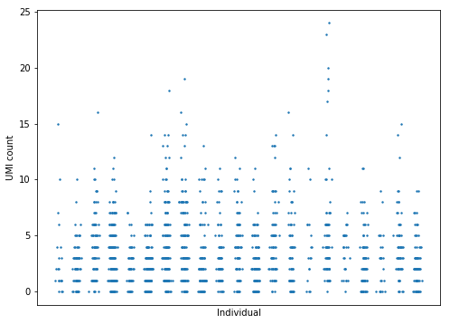
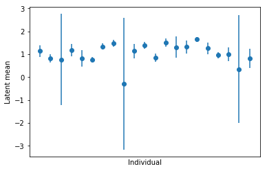
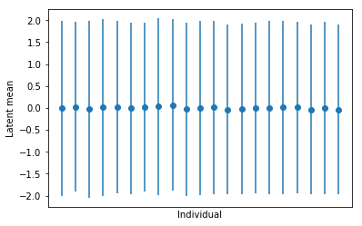

NB estimation
Table of Contents
Introduction
Here we investigate how mean and dispersion estimates can explain away each other using single cell RNA-Seq data for the gene ZSWIM7 (the top eQTL gene from the iPSC bulk RNA-Seq study).
For simplicity, we ignore genotype for now.
Data
We previously prepared the relevant data:
with open('test_data.pkl', 'rb') as f: data = pickle.load(f) data.keys()
dict_keys(['onehot', 'genotypes', 'counts', 'normalizers'])
Plot the distribution of the data:
n = data['counts'].shape[0] plt.clf() plt.gcf().set_size_inches(8, 6) plt.scatter(x=np.where(data['onehot'] == 1)[1] + np.random.normal(scale=0.1, size=n), y=data['counts'], s=2) plt.xlabel('Individual') plt.ylabel('UMI count') plt.gca().set_xticks([])
[]

Per-individual mean, no overdispersion
tf.reset_default_graph() ed.get_session().close() n, p = data['genotypes'].shape m, _ = data['onehot'].shape onehot = tf.placeholder(tf.float32, [m, n]) mean_bias = ed.models.Normal(loc=tf.zeros([n, 1]), scale=tf.ones([n, 1])) counts = ed.models.Poisson(rate=tf.exp(tf.matmul(onehot, mean_bias))) q_mean_bias = ed.models.NormalWithSoftplusScale( loc=tf.Variable(tf.random_normal([n, 1])), scale=tf.Variable(tf.random_normal([n, 1])))
inf = ed.ReparameterizationKLqp( latent_vars={mean_bias: q_mean_bias}, data={onehot: data['onehot'], counts: data['counts']}) inf.run(n_samples=10, optimizer=tf.train.AdamOptimizer(learning_rate=5e-3))
1000/1000 [100%] ██████████████████████████████ Elapsed: 3s | Loss: 5215.281
Plot posterior 95% credible intervals for the latent mean of each individual.
res = pd.DataFrame(np.hstack(ed.get_session().run([q_mean_bias.mean(), q_mean_bias.variance()]))) plt.clf() plt.errorbar(x=np.arange(n), y=res[0], yerr=1.96 * np.sqrt(res[1]), fmt='o') plt.xlabel('Individual') plt.ylabel('Latent mean') plt.gca().set_xticks([])
[]

Per-individual mean, global overdispersion
tf.reset_default_graph() ed.get_session().close() n, p = data['genotypes'].shape m, _ = data['onehot'].shape onehot = tf.placeholder(tf.float32, [m, n]) mean_bias = ed.models.Normal(loc=tf.zeros([n, 1]), scale=tf.ones([n, 1])) disp_bias = ed.models.Normal(loc=tf.zeros([1, 1]), scale=tf.ones([1, 1])) rate = ed.models.Gamma( concentration=tf.exp(tf.matmul(onehot, mean_bias)), rate=tf.exp(disp_bias)) counts = ed.models.Poisson(rate=rate) q_mean_bias = ed.models.NormalWithSoftplusScale( loc=tf.Variable(tf.random_normal([n, 1])), scale=tf.Variable(tf.random_normal([n, 1]))) q_disp_bias = ed.models.NormalWithSoftplusScale( loc=tf.Variable(tf.random_normal([1, 1])), scale=tf.Variable(tf.random_normal([1, 1])))
inf = ed.ReparameterizationKLqp( latent_vars={mean_bias: q_mean_bias, disp_bias: q_disp_bias}, data={onehot: data['onehot'], counts: data['counts']}) inf.run(n_samples=10, optimizer=tf.train.AdamOptimizer(learning_rate=5e-3))
1000/1000 [100%] ██████████████████████████████ Elapsed: 10s | Loss: 15706.714
Plot the posterior 95% credible interval for the latent means.
res = pd.DataFrame(np.hstack(ed.get_session().run([q_mean_bias.mean(), q_mean_bias.variance()]))) plt.clf() plt.errorbar(x=np.arange(n), y=res[0], yerr=1.96 * np.sqrt(res[1]), fmt='o') plt.xlabel('Individual') plt.ylabel('Latent mean') plt.gca().set_xticks([])
[]

Recover the estimated posterior mean and variance of the global dispersion parameter.
pd.DataFrame(np.hstack(ed.get_session().run([q_disp_bias.mean(), q_disp_bias.variance()])))
0 1
0 -0.709709 0.002269
Per-individual mean, per-individual overdispersion
tf.reset_default_graph() ed.get_session().close() n, p = data['genotypes'].shape m, _ = data['onehot'].shape onehot = tf.placeholder(tf.float32, [m, n]) genotypes = tf.placeholder(tf.float32, [n, p]) normalizers = tf.placeholder(tf.float32, [m, 1]) mean_bias = ed.models.Normal(loc=tf.zeros([n, 1]), scale=tf.ones([n, 1])) disp_bias = ed.models.Normal(loc=tf.zeros([n, 1]), scale=tf.ones([n, 1])) rate = ed.models.Gamma( concentration=tf.exp(tf.matmul(onehot, mean_bias)), rate=tf.exp(tf.matmul(onehot, disp_bias))) counts = ed.models.Poisson(rate=rate) q_mean_bias = ed.models.NormalWithSoftplusScale( loc=tf.Variable(tf.random_normal([n, 1])), scale=tf.Variable(tf.random_normal([n, 1]))) q_disp_bias = ed.models.NormalWithSoftplusScale( loc=tf.Variable(tf.random_normal([n, 1])), scale=tf.Variable(tf.random_normal([n, 1]))) inf = ed.ReparameterizationKLqp( latent_vars={mean_bias: q_mean_bias, disp_bias: q_disp_bias}, data={globals()[k]: v for k, v in data.items()})
inf.run(n_samples=10, optimizer=tf.train.AdamOptimizer(learning_rate=5e-3))
Plot the posterior 95% credible intervals for the latent means.
res = pd.DataFrame(np.hstack(ed.get_session().run([q_mean_bias.mean(), q_mean_bias.variance()]))) plt.clf() plt.errorbar(x=np.arange(n), y=res[0], yerr=1.96 * np.sqrt(res[1]), fmt='o') plt.xlabel('Individual') plt.ylabel('Latent mean') plt.gca().set_xticks([])
[]

Plot the posterior 95% credible intervals for the latent dispersions.
res = pd.DataFrame(np.hstack(ed.get_session().run([q_disp_bias.mean(), q_disp_bias.variance()]))) plt.clf() plt.errorbar(x=np.arange(n), y=res[0], yerr=1.96 * np.sqrt(res[1]), fmt='o') plt.xlabel('Individual') plt.ylabel('Latent dispersion') plt.gca().set_xticks([])
[]